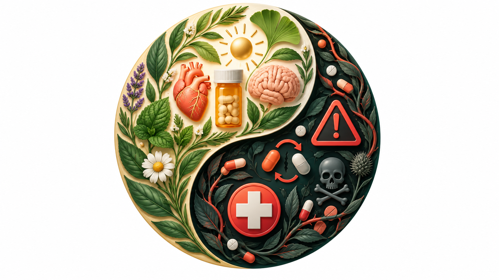

Section 8: Negative Health Consequences and Drug Interactions
Drug effects depend on the substance, dose, route, timing, health, tolerance, setting, and interactions. This chapter separates evidence from exaggeration while treating preventable harm honestly.
Opening story · legend, evidence, and preventable loss
8.1 The 27 Club: Is the “Curse” Real?
Six artists commonly grouped into the “27 Club”; the shared age is culturally memorable, but their lives and deaths were not one uniform story.
Popular culture groups famous artists who died at age 27 into a mythical “27 Club.” Robert Johnson’s mysterious death in 1938 and the later cluster of Brian Jones, Jimi Hendrix, Janis Joplin, and Jim Morrison helped build the legend. Kurt Cobain’s death in 1994 and Amy Winehouse’s in 2011 renewed it. The story feels patterned—but a BMJ study found no special mortality spike at age 27. Famous musicians did face elevated risks across their twenties and thirties.
What the documented record says
Artist
What is supported
What remains story or uncertainty
Robert Johnson
Died at 27 in 1938; the surviving medical record does not establish a clear cause.
The crossroads bargain and poisoning are enduring legends, not proven facts.
Brian Jones
Drowned in his pool in 1969; the inquest recorded death by misadventure while under the influence of alcohol and drugs.
Later murder theories remain contested.
Jimi Hendrix
Died in 1970 after barbiturate intoxication and aspiration of vomit; the inquest returned an open verdict.
A later television reconstruction cannot turn this into a proven heroin overdose.
Janis Joplin
Died in 1970 from an accidental heroin overdose.
Her death is often folded into a supernatural pattern that evidence does not support.
Jim Morrison
Died in Paris in 1971; heart failure was recorded and no autopsy was performed.
A heroin overdose is plausible in later accounts but was never medically established.
Kurt Cobain
Died by suicide in 1994; toxicology documented heroin in his body.
Police reviews have not substantiated homicide theories.
Amy Winehouse
Died from alcohol poisoning after renewed drinking following abstinence; the inquest recorded death by misadventure.
She did not die from heroin or from simply failing to turn over in bed.
Selection
Why do we remember deaths at 27 but overlook artists who died at other ages?
Social conditions
Did fame, touring, isolation, access, trauma, and industry norms precede or intensify substance use?
Health response
Which deaths might safer prescribing, treatment, overdose response, or mental-health care have prevented?
The lesson is not that drugs were irrelevant. It is that a memorable age-based legend can hide the different mechanisms involved—opioid overdose, alcohol poisoning, sedative interaction, aspiration, suicide, and uncertain causes. Prevention requires those distinctions.
8.2 Risk is a relationship, not a property of one molecule
Acute effects occur during or soon after use. Chronic effects develop through repeated exposure or persist over time. A therapeutic dose can become dangerous when combined with another depressant, taken by a person without tolerance, used by an unintended route, or obtained from an unpredictable supply.
Five questions: What substance is present? How much and by what route? What else was taken? What person-level vulnerabilities matter? What environmental conditions increase or reduce harm?
Alcohol
8.3 Alcohol affects nearly every organ system
Brain and behavior
Impaired judgment, memory, reaction time, balance, and coordination. Very high blood alcohol levels can suppress breathing and protective reflexes.
Liver and pancreas
Fatty liver, alcohol-associated hepatitis, cirrhosis, and pancreatitis can develop. “Sclerosis of the liver” is not the correct term for cirrhosis.
Heart and cancer
Heavy use raises risks for hypertension, arrhythmia, cardiomyopathy, stroke, and several cancers. Current evidence does not recommend beginning to drink for health.
Withdrawal after sustained heavy use can cause seizures or delirium tremens and may require urgent medical treatment. Alcohol also widens peripheral blood vessels, creating a feeling of warmth while increasing heat loss in cold environments.
Delirium tremens and severe alcohol withdrawal
Delirium tremens (DTs) is the most dangerous form of alcohol withdrawal. It can include severe confusion, agitation, tremor, sweating, hallucinations, fever, rapid heart rate, and seizures. Symptoms often emerge after a person with prolonged heavy alcohol exposure abruptly stops or sharply reduces drinking.
Medical emergency: DTs can be fatal without treatment. A person at risk should not attempt an unsupervised detox. Call emergency services for seizure, severe confusion, hallucinations, collapse, or unstable breathing.
Documentary case study
There’s Something Wrong with Aunt Diane raises questions about toxicology, tolerance, impaired driving, denial, family narratives, and how evidence competes with identity.
Content note: death, impaired driving, substance use, and family grief.
Wernicke–Korsakoff syndrome
Long-term heavy alcohol use can interfere with nutrition and the body’s absorption and storage of thiamine (vitamin B1). Severe deficiency can injure the brain.
Wernicke encephalopathy is the acute phase and a medical emergency. Possible signs include confusion, problems coordinating movement, and abnormal eye movements. The full combination does not appear in every patient, so clinicians should not wait for all three signs before treating suspected deficiency.
Korsakoff syndrome is a persistent disorder involving severe difficulty forming new memories, loss of older memories, and sometimes confabulation, in which the brain fills memory gaps without conscious lying. Prompt thiamine treatment can prevent additional injury, although established memory impairment may not fully reverse.
Emergency point: clinicians give thiamine promptly when Wernicke encephalopathy is suspected. These videos are educational illustrations and should not be used to diagnose an individual.
Wernicke–Korsakoff overview
Korsakoff dementia and memory
Interactive withdrawal field guide
8.4 Withdrawal is real—but the danger is not the same for every drug
Swipe, drag, use the arrow keys, or select the controls to turn the pages. Each page separates what withdrawal may feel like from what requires urgent care. Timing varies with the specific drug, dose, duration and frequency of use, route, health, pregnancy, and other substances.
Physical dependence
The body has adapted to repeated exposure, so reducing or stopping produces withdrawal. This can happen during prescribed use and does not, by itself, prove addiction.
Psychological dependence
Craving, learned cues, emotional relief, expectations, and habits can make stopping difficult. These experiences are biological and social—not imaginary or “just in the mind.”
Substance use disorder
A pattern involving impaired control and continued use despite significant harm. A person may have dependence without a use disorder, or a use disorder with little dramatic withdrawal.
Do not make “cold turkey” a test of willpower. Alcohol and benzodiazepine withdrawal can cause life-threatening seizures or delirium. Anyone with sustained heavy alcohol use, regular benzodiazepine use, a prior withdrawal seizure, pregnancy, or serious illness should obtain medical guidance before stopping.
Can be life-threatening
Alcohol withdrawal
After sustained heavy drinking, the nervous system may become overactive when alcohol is sharply reduced.
Common Tremor, sweating, anxiety, nausea or vomiting, insomnia, fast pulse, elevated blood pressure.
Emergency signs Seizure, severe confusion, hallucinations, fever, collapse, or delirium tremens.
Safer response: Seek medical assessment before stopping if use has been heavy or regular. Detox manages the acute withdrawal; continuing treatment addresses alcohol use disorder.
Can be life-threatening
Benzodiazepine and sedative withdrawal
Physical dependence can develop even when benzodiazepines are taken as prescribed. Abrupt stopping or reducing too quickly can be dangerous.
Common Anxiety, insomnia, irritability, tremor, muscle pain, sensory disturbance, nausea.
Emergency signs Seizure, delirium, hallucinations, psychosis, severe agitation, or suicidal thoughts.
Safer response: Do not abruptly stop a regularly used benzodiazepine. A clinician creates an individualized gradual taper and monitors symptoms.
Usually not directly fatal—but complications matter
Opioid and opiate withdrawal
Withdrawal can be intensely painful and distressing. Unlike severe alcohol or benzodiazepine withdrawal, it is usually not directly life-threatening in an otherwise healthy adult.
Common Muscle and bone pain, diarrhea, vomiting, sweating, gooseflesh, runny nose, anxiety, insomnia, dilated pupils.
Urgent concerns Dehydration, aspiration, pregnancy, serious illness, or inability to remain safe.
Greatest post-withdrawal danger: tolerance falls. Returning to a previous dose can cause fatal overdose. Buprenorphine or methadone treatment reduces withdrawal, craving, and overdose risk; naloxone should be available.
Mental-health risk can be urgent
Cocaine and methamphetamine withdrawal
A stimulant “crash” reflects brain and body adaptation—not weak character. It is not typically medically dangerous in the same way as alcohol withdrawal, but mood and safety risks can be severe.
Common Fatigue, increased sleep or insomnia, depressed mood, anxiety, irritability, slowed thinking, increased appetite, vivid dreams, craving.
Emergency signs Suicidal thoughts, psychosis, dangerous agitation, chest pain, or inability to care for oneself.
Safer response: Support sleep, food, hydration, a low-stimulation setting, and clinical monitoring when depression or psychosis is present. Behavioral treatments can help recovery.
Usually not life-threatening
Cannabis / THC withdrawal
Frequent high-dose cannabis use can produce a recognized withdrawal syndrome. Calling it “only psychological” misses sleep, appetite, and other physical changes.
Common Irritability, anxiety, restlessness, depressed mood, sleep difficulty or vivid dreams, decreased appetite.
Physical symptoms Headache, sweating or chills, shakiness, feverish feeling, and abdominal discomfort may occur.
Safer response: Plan for sleep disruption and triggers; obtain help if symptoms are severe, prolonged, or accompanied by unsafe thoughts or other substance withdrawal.
Not usually medically dangerous
Nicotine withdrawal
Nicotine can create powerful dependence whether delivered by cigarettes, vapes, pouches, or other products.
Common Strong cravings, irritability, restlessness, anxiety or low mood, trouble concentrating, sleep disruption, increased appetite.
Why relapse happens Fast nicotine delivery, learned routines, stress relief, and social cues reinforce use.
Safer response: Counseling plus medication can improve quit success. Options include nicotine replacement and prescription medicines selected with a clinician.
Read the risk label carefully
Can be life-threatening
Alcohol and benzodiazepines can produce seizures or delirium and may require supervised withdrawal.
Complications can be serious
Opioid withdrawal is usually not directly fatal, but dehydration and relapse after tolerance falls can be deadly. Stimulant withdrawal may create an acute suicide or psychosis risk.
Usually not life-threatening
Cannabis and nicotine withdrawal can still cause genuine distress, impaired functioning, and relapse.
The placenta exchanges oxygen and nutrients but does not block alcohol, nicotine, THC, opioids, or many other drugs. Effects depend on timing, amount, pattern, route, co-exposures, maternal health, and access to prenatal care. Select a substance family.
Care matters: pregnant people should not stop prescribed opioids, benzodiazepines, or alcohol dependence abruptly without medical guidance. Treatment during pregnancy can protect both parent and fetus.
Fetal alcohol spectrum disorders
8.6 FASD is broader than facial appearance
FASD is an umbrella term for lifelong physical, behavioral, learning, and neurodevelopmental effects associated with prenatal alcohol exposure. Fetal alcohol syndrome (FAS) is one diagnosis within the spectrum. Many people with FASD do not have the characteristic facial pattern, and no photograph can diagnose an individual.
Across populations: This image shows how the characteristic facial pattern may appear alongside natural racial and ethnic variation. Clinicians use measurements and population-appropriate guides rather than visual impression alone.
The three cardinal facial features used in FAS diagnosis
Short palpebral fissures
The horizontal eye-opening length measures below the expected range for age and population norms.
Smooth philtrum
The groove between the nose and upper lip is unusually smooth when assessed with a validated guide.
Thin upper vermilion
The visible red portion of the upper lip is unusually thin relative to the appropriate clinical guide.
Additional physical findings: older teaching diagrams often show ear shape, palmar creases, and other minor anomalies. These may support a complete medical assessment, but they are not by themselves diagnostic and may also occur in people without FASD.Hands and ears: this closer view helps students recognize findings described in older clinical teaching materials. These traits are associated findings, not the three cardinal facial features and not a diagnosis by themselves.
Diagnosis requires more: clinicians evaluate growth, central nervous system structure or function, developmental history, possible prenatal exposure, and alternative explanations. Terms such as “mental retardation” in older slides should be replaced with intellectual disability.
Another directly related condition: neonatal opioid withdrawal syndrome
Neonatal abstinence syndrome (NAS) describes withdrawal signs after prenatal exposure to certain substances. When opioids cause it, clinicians increasingly use neonatal opioid withdrawal syndrome (NOWS). Signs can include tremors, irritability, feeding difficulty, sleep disturbance, vomiting, diarrhea, and high-pitched crying. NOWS is treatable and does not mean a parent intentionally harmed a baby. Medical treatment for opioid use disorder during pregnancy remains recommended because untreated disorder also carries serious risks.
Interpreting brain images
8.7 Brain imaging can inform research, but one image cannot prove causation
Image supplied for class discussion. Amen Clinics uses SPECT, not PET. SPECT estimates regional blood flow using a radioactive tracer.
What students should ask
Was this one person or a group average?
Was there a matched comparison group?
Were alcohol, nicotine, other drugs, sleep, psychiatric conditions, medications, and vascular health controlled?
Does lower perfusion mean permanent injury, a temporary state, or ordinary variation?
Can another laboratory reproduce the finding?
Amen and colleagues reported lower cerebral perfusion among cannabis users in a large retrospective SPECT dataset. The design shows an association, not that THC alone caused every difference. Professional reviews also caution that neuroimaging generally lacks enough specificity to diagnose a psychiatric or substance-use condition in an individual.
Impaired reaction time, anxiety or panic, psychosis-like symptoms at high doses, and accidental ingestion of edibles.
Cannabis use disorder, chronic bronchitis from smoke, possible cannabinoid hyperemesis syndrome, and cognitive effects that vary with age and pattern of use.
Persistent perceptual symptoms are uncommon but possible. Strong claims that LSD changes chromosomes are unsupported; MDMA findings require attention to dose, co-use, and study design.
Anabolic steroids
Blood-pressure and mood changes; injection-related infection.
Cardiovascular, liver, kidney, hormonal, reproductive, skin, and psychiatric effects; some can persist after stopping.
Polydrug risk
8.9 Interactions often matter more than the label “overdose”
Alcohol plus cocaine forms cocaethylene, an active metabolite associated with added cardiovascular toxicity. Multiple central nervous system depressants can combine to suppress breathing. Stimulants do not safely “cancel out” depressants; masking sedation can delay recognition while both drug effects continue.
Try our interactive:Drug Interaction Tool. It distinguishes additive, synergistic, antagonistic, and metabolic interactions without assuming that opposite subjective effects equal safety.
Potential benefits and limits
8.10 Benefit and harm exist on the same continuum
Potential benefit
Opioids can relieve severe acute, surgical, cancer, and palliative pain.
Cannabinoid medicines help selected conditions and symptoms.
Stimulants can treat ADHD and narcolepsy.
Sedatives and anesthetics have essential clinical uses.

Potential harm
Side effects, dependence, interactions, impaired behavior, and overdose.
Unknown potency or contamination outside regulated supply.
Greater vulnerability during pregnancy, adolescence, aging, or illness.
Social harms from stigma, punishment, and unequal access to care.
Balance does not always mean moderation. The safer level may be prescribed use, lower use, no use, or medically supervised treatment. Pregnancy, driving, prior addiction, dangerous interactions, and some health conditions change the decision. “Natural” does not mean harmless, and “prescribed” does not mean risk-free.
Help without judgment
8.11 If use is becoming hard to control
Warning signs include using more than intended, repeated unsuccessful attempts to cut down, withdrawal, risky use, neglect of responsibilities, or continuing despite harm. A person does not need to “hit bottom” before seeking help.